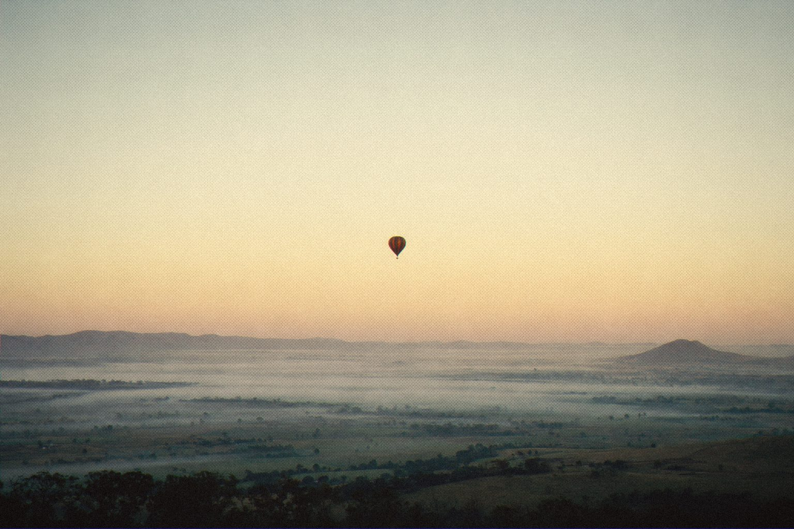

It lifts the quiet. It leaves the loud alone.

Most compressors make a mix louder by pushing the peaks down. Magnitude works the other way round: it lifts the detail underneath them.
Room tone, reverb tails and the breath before a line all come up into the light, while the peaks stay exactly where you left them. You get density without pumping.
It's a descendant of PRESSURE, the 2006 plug-in by Tom and Jeremy Gersic, reborn in Rust.

Upward compression for the mastering chain.
Magnitude
Upward mastering compressor.
Open source · AU · VST3 · CLAP
Jardim SonoroOpen-source audio research
Download: jardimsonoro.com/audioSource & issues: github.com/nagualcode/magnitude
Mastering10